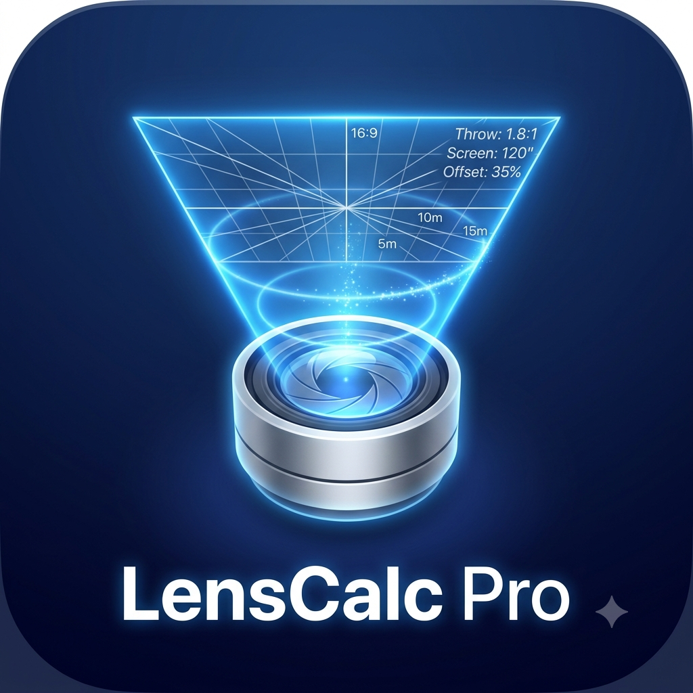

// LensCalc Pro
Calcolo ottica videoproiettore
Determina distanza di proiezione, base dello schermo o valore ottica partendo dai due valori noti.
BASE
×
OTTICA
=
DISTANZA
DISTANZA
/
OTTICA
=
BASE
DISTANZA
/
BASE
=
OTTICA
01 — cosa vuoi calcolare
Distanza
Base
Ottica
Risultato
—
02 — altezza immagine rispetto alla base (16:9 e 16:10)
Base
(m)
— larghezza immagine
usa la base già calcolata sopra ↑
Altezza in formato 16:9
—
Altezza in formato 16:10
—